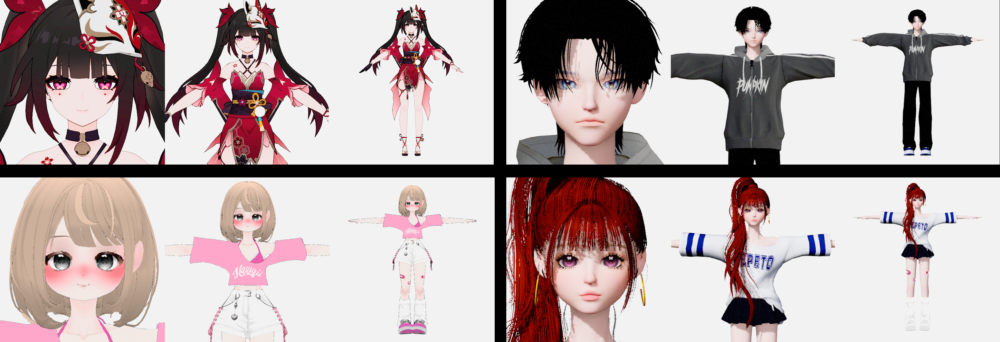
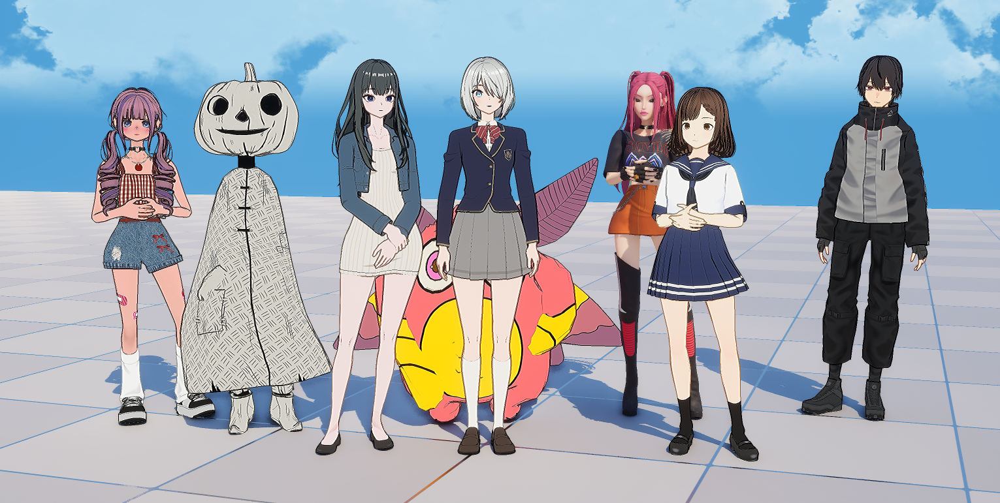

Character System
300+ characters with 6-second tool loading — from parts assembly to preview and external VRM support
Problem
As the character count approached 300, we needed a pipeline to systematically manage parts assembly, registration, preview, and loading. Opening the editor pulled in all assets via hard references, requiring a 30-second wait. Checking colors or animations meant launching the game every time. With external VRM support added, manually setting up cameras and thumbnails per model became yet another burden.
Solution
Three independent systems -- an Editor tool, a Runtime character Blueprint, and VRM Reference Points -- were designed to load Data Assets and external models while verifying them with the in-house shader system and animations. Artists assemble parts and register presets in the editor, producing Data Assets that the runtime loads asynchronously.

The original character Blueprint had both save and load in a single actor, but the references held by the save side caused a 30-second wait every time the editor opened. By extracting save into a dedicated editor tool and leaving only load in the runtime Blueprint, load time dropped from 30s to 6s. The editor tool also implements the Editor Tick Interface, enabling preview directly on a background without launching the game. For external VRM, Reference Points auto-detects the face via a 4-level fallback and handles camera targeting and thumbnail generation automatically.
Result
| Category | Before | After | Improvement |
|---|---|---|---|
| Editor Load | 30s | 6s | 80%↓ |
| Packaged Load | Several seconds | Perceived 0s | Eliminated |
| Character Presets | - | 300+ | Unified |
System Structure
Three independent codebases connected via Data Assets and VRM info nodes. The editor tool produces Data Assets, the runtime character Blueprint loads them asynchronously, and VRM Reference Points updates external model info at runtime.
Editor — Character Environment Checker
Artists assemble head, hair, and body parts in the editor and save them as presets. The Editor Tick Interface allows verifying characters and animations on a background without launching the game. The Data Assets produced here become the runtime's input.
Runtime — Character Blueprint
A separate codebase from the editor tool -- a runtime character Blueprint inheriting the base character class. Internal characters load parts asynchronously from editor-produced Data Assets (Head/Hair/Body split), while external VRM loads the entire model through a loader. The same Blueprint handles both, branching only at the load path, managing 300+ internal presets and community characters in a single system.
External Model Support — VRM Reference Points
A C++ module written for the VRM4U plugin that updates VRM info nodes in the runtime character Blueprint. It auto-detects the face position of any external VRM/PMX via a 4-level fallback, then uses the result as a camera target to automatically capture 3-angle thumbnails (face close-up, upper body, full body). A commandlet environment enables batch thumbnail generation for all characters without opening the editor. A-pose/T-pose detection is also automatic.

